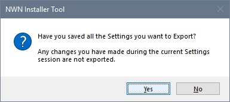
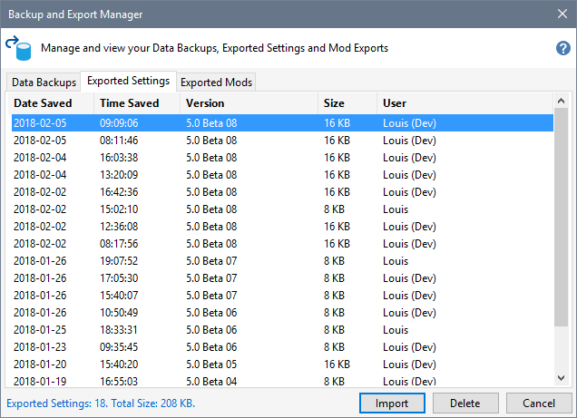

Export Settings
You should export your Settings after you have finished customising the Installer Tool to suite your tastes or when you have added or edited Profiles.
Click Export your Settings on the Ribbon's Backup and Recovery tab or click Advanced Settings from the Options menu, click Export and answer Yes to the confirmation message if appropriate.

Import Settings
- Click Advanced Settings from the Options menu then click Import.

- Select the exported Settings that you want to restore and click Import.
- Review your Settings to ensure you are satisfied with the imported values. Pay special attention to the Run and Web Menu items, which may not be in the same order as they were when you Exported your Settings.
- Click the Save button to apply the imported Settings or click the Cancel button to retain your current Settings.
You cannot import Settings by clicking the Backup and Export Manager from the Tools menu.
Related Topics
Backup and Restore the Installer Tool's data
Export and Import Settings
Export and Import Mods
Import Map Settings